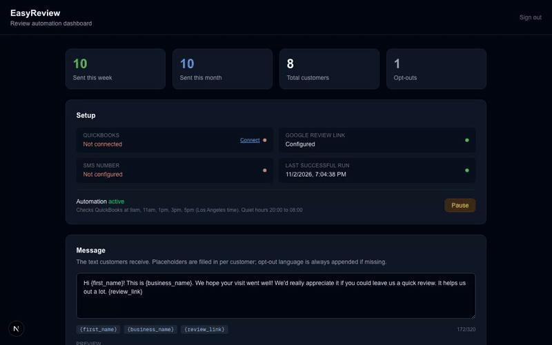

EasyReview: Review Automation SaaS
A full-stack automation tool that sends SMS review requests off QuickBooks data, replacing a paid SaaS product at near-zero cost for a local business.

Screenshots
Overview
EasyReview started from a real problem: a local business was paying monthly for a SaaS product that did one thing: text customers asking for a Google review after a job. I built a full-stack version that does the same thing at near-zero cost by pulling straight from their QuickBooks data.
It integrates the QuickBooks API to know who was just invoiced, then automatically sends SMS review requests on a schedule. In production it sends over 300 messages a month with no manual steps.
How It Works
- QuickBooks API integration pulls recent customer and invoice data
- Supabase (PostgreSQL) backend stores customers and message state
- Next.js front end for setup and monitoring
- Playwright browser automation handles the steps without a native API
- Cron-based schedule fires 300+ outbound messages a month, unattended
What I Learned
- Integrating a real third-party business API (QuickBooks OAuth + data model)
- Building reliable, unattended automation with Playwright
- Designing a Supabase schema around a recurring outbound pipeline
- Shipping something a real business depends on day to day